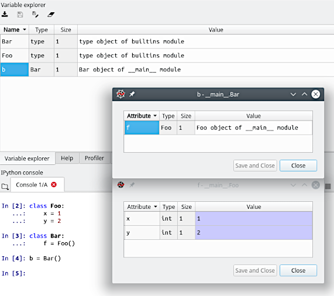
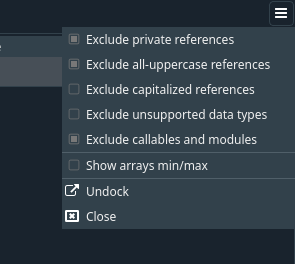
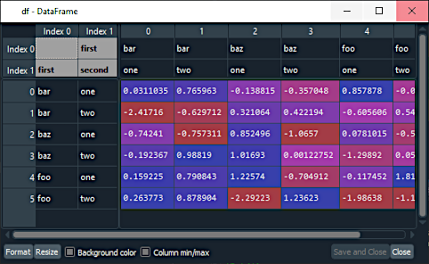
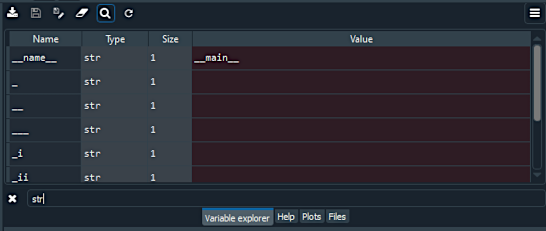

Variable Explorer improvements in Spyder 4
Spyder 4 will be released very soon with lots of interesting new features that you'll want to check out, reflecting years of effort by the team to improve the user experience. In this post, we will be talking about the improvements made to the Variable Explorer.
These include the brand new Object Explorer for inspecting arbitrary Python variables, full support for MultiIndex dataframes with multiple dimensions, and the ability to filter and search for variables by name and type, and much more.
It is important to mention that several of the above improvements were made possible through integrating the work of two other projects. Code from gtabview was used to implement the multi-dimensional Pandas indexes, while objbrowser was the foundation of the new Object Explorer.
New viewer for arbitrary Python objects
For Spyder 4 we added a long-requested feature: full support for inspecting any kind of Python object through the Variable Explorer. For many years, Spyder has been able to view and edit a small subset of Python variables: NumPy arrays, Pandas DataFrames and Series, and builtin collections (lists, dictionaries and tuples). Other objects were displayed as dictionaries of their attributes, inspecting any of which required showing a new table. This made it rather cumbersome to use this functionality, and was the reason arbitrary Python objects were hidden by default from the Variable Explorer view.

For the forthcoming Spyder release, we've integrated the excellent objbrowser project by Pepijn Kenter (@titusjan), which provides a tree-like view of Python objects, to offer a much simpler and more user-friendly way to inspect them.
As can be seen above, this viewer will also allow users to browse extra metadata about the inspected object, such as its documentation, source code and the file that holds it.
It is very important to note that this work was accomplished thanks to the generosity of Pepijn, who kindly changed the license of objbrowser to allow us to integrate it with Spyder.
To expose this new functionality, we decided to set the option to hide arbitrary Python objects in the Variable Explorer to disabled by default, and introduced a new one called Exclude callables and modules. With this enabled by default, Spyder will now display a much larger fraction of objects that can be inspected, while still excluding most "uninteresting" variables.

Finally, we added a context-menu action to open any object using the new Object Explorer even if they already have a builtin viewer (DataFrames, arrays, etc), allowing for deeper inspection of the inner workings of these datatypes.
Multi-index support in the dataframe viewer
One of the first features we added to the Variable Explorer in Spyder 4 was MultiIndex support in its DataFrame inspector, including for multi-level and multi-dimensional indices. Spyder 3 had basic support for such, but it was very rudimentary, making inspecting such DataFrames a less than user-friendly experience.
For Spyder 4, we took advantage of the work done by Scott Hansen (@firecat53) and Yuri D'Elia (@wavexx) in their gtabview project, particularly its improved management of column and table headings, which allows the new version of Spyder to display the index shown above in a much nicer way.

Fuzzy filtering of variables
Spyder 4 also includes the ability to filter the variables shown down to only those of interest. This employs fuzzy matching between the text entered in the search field and the name and type of all available variables.
To access this functionality, click the search icon in the Variable Explorer toolbar, or press Ctrl+F (Cmd-F on macOS) when the Variable Explorer has focus.

To remove the current filter, simply click the search icon again, or press Esc or Ctrl+F (Cmd-F) while the Variable Explorer is focused.
Refresh while code is running
We added back the ability to refresh the Variable Explorer while code is running in the console. This feature was dropped in Spyder 3.2, when we removed the old and unmaintained Python console. However, this functionality will return in Spyder 4, thanks to the fantastic work done by Quentin Peter (@impact27) to completely re-architect the way Spyder talks to the Jupyter kernels that run the code in our IPython console, integrating support for Jupyter Comms.

To trigger a refresh, simply click the reload button on the Variable Explorer toolbar, or press the shortcut Ctrl+R (Cmd-R) when it has focus.
Full support for sets
In Spyder 3, the Variable Explorer could only show builtin Python sets as arbitrary objects, making it very difficult for users to browse and interact with them. In Spyder 4, you can now view sets just like lists, as well as perform various operations on them.

UI enhancements and more
Finally, beyond the headline features, we've added numerous smaller improvements to make the Variable Explorer easier and more efficient to use. These include support for custom index names, better and more efficient automatic resizing of column widths, support for displaying Pandas Indices, tooltips for truncated column headers, and more.
Spyder's Variable Explorer is what many of you consider to be one of its standout features, so we can't wait for you all to get your hands on the even better version in Spyder 4. Thanks again to Quansight, our generous community donors, and as always all of you! Spyder 4.0.0 final is planned to be released within approximately one more week, but if you'd like to test it out immediately, follow the instructions on our GitHub to install the pre-release version (which won't touch your existing Spyder install or settings). As always, happy Spydering!